This is a poem I wrote about squares. I think it is dumb.
1. Be there or be square. Square is boring.
2. Squares are rectangles but rectangles are not squares.
This is something everyone must know to understand the universe.
One thing can be another but the converse is not true.
This means that not everything is interchangeable.
But really this is arbitrary. Because everything is interchangeable.
Nothing is nothing.
3. Maybe a rectangle can be a square in another dimension.
This doesn’t make sense because squares and rectangles only exist
in one dimension.
Once you add another it becomes a cube.
What is the three dimensional form of a rectangle.
A rectangular prism.
No one says rectangular prism.
We like cubes. Ice cubes. Rubik’s cubes.
4. My nerdy friends used to see who could solve Rubik’s cubes
the fastest.
I don’t know what they were trying to prove.
What is anyone trying to prove.
It is hard to prove something.
It has never really been done.
It will never be done.
5. I like to play
Tetris. Tetris is a nerdy game because it is old.
Nerds like old things. And new things.
What is a nerd.
Nerd is a weird word. Weird is a nerd word.
Tetris has a lot of squares. I play against myself.
I don’t know what I’m trying to prove.
6. This writing about squares is not trying to prove anything.
It is just a rant about squares. It is very square.
I hope you like it.
Most people like squares because
they are symmetrical and predictable.
We like information we can understand.
7. Squares we can put into boxes and
squares are boxes, are boxed.
They are easily understood. Maybe.
Maybe this writing is trying to prove otherwise.
It is impossible to understand squares and it is impossible to prove
that understanding squares is impossible.
8. What are we left with. Four lines. Any size but always the same
relative to each other.
Some space in the middle. What is space.
Is it still space if it is not enclosed if it is not boxed in.
Even the universe is finite from the outside.
Or so I have heard. I’m not a physicist.
9. How can something be infinite from the inside and
finite from the outside.
My brain does not have the necessary boxes to store that idea in.
I need to build the boxes first.
They will take a lot of work to build and
I do not want to put in the effort.
10. I am writing about squares by pressing on squares.
Maybe they are not squares they might be
a bit too three dimensional.
How much is too much. Is there a clear dividing line
I guess it would have to be a two dimensional line or
maybe dimensional divide would increase proportionally
between the dimensions.
Are there truly infinite dimensions.
Or is there a limit or is this just a limit
of human perception.
If there is a limit to human perception
why do we even try to fathom concepts beyond it
if the whole idea is that we cannot.
Humans are silly. Ha ha.
Why do we study things as though they are ends in themselves.
Is a square an end in itself.
Is a square a real thing.
That is a silly question. Of course it is real.
If I say it is real it is real.
Why bother separating appearances from the material world
because the material world is just appearance anyway.
11. A SQUARE is an appearance. It looks like this
__
but that is only one of its forms so
a square can look very different from that
and still be a square so was it even useful showing you that.
if you see that and you have never
seen or heard of another square would you
be able to recognize another square if you saw one.
I do not believe so.
I wonder a lot about how we gain this knowledge of squares.
And lots of other things.
Like dogs there are many different breeds of dogs that
look very different but if we see a new breed of dog somehow
we still know it is a dog how do we know that.
I wish I knew more about the human brain and about
society and about squares.
12. It is funny that I choose a square as a motif of the universe
because square seems like an inorganic form relative to
the vast blob of the universe
but how can a square be inorganic
even if it was created by humans
because humans are organic.
There is nothing that is inorganic really.
Robots are organic because they were created by humans.
Gene editing is an organic process because we evolved
to this point naturally.
We cannot escape what is natural there is nothing unnatural
about humans or about squares
squares are just as real and true as the universe.
Everything is just as real and true as
the universe because everything is
the universe and the universe
is everything and nothing is nothing.
That is why
a blank square is art and
everything is art because
art is creative energy
is the universe.
 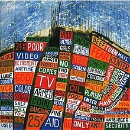
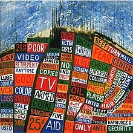

 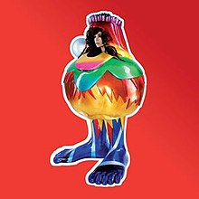
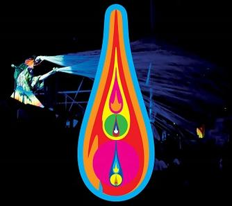
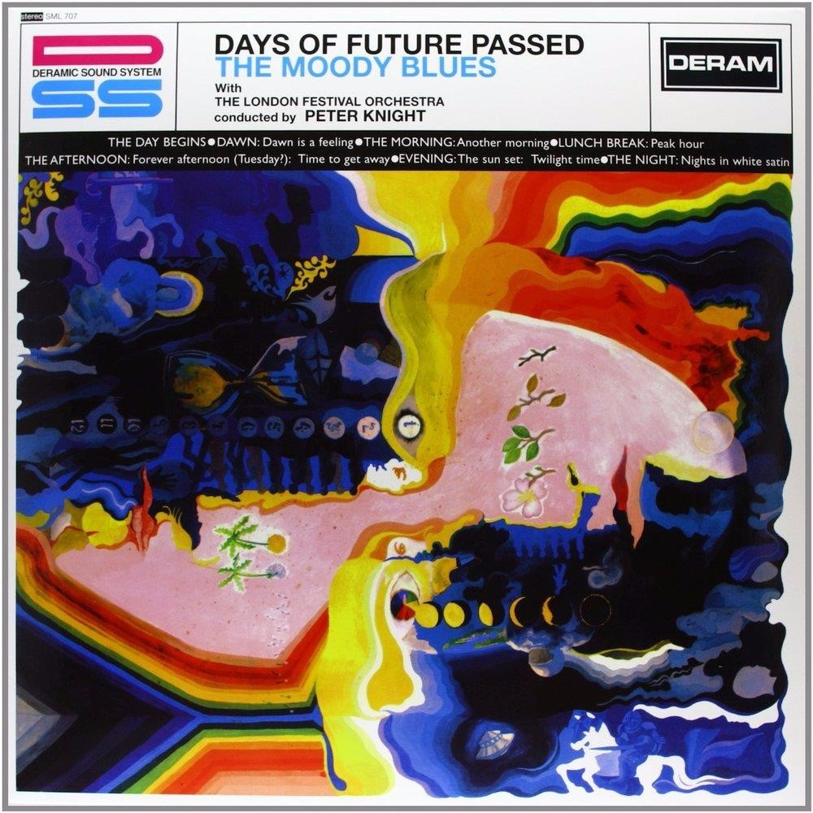
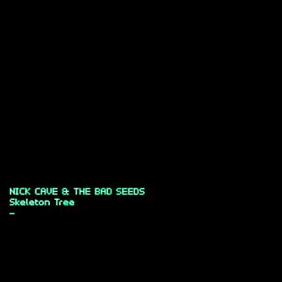
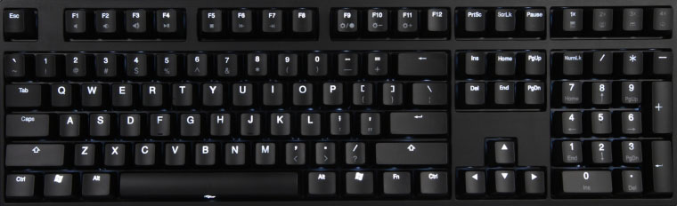
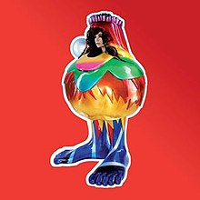
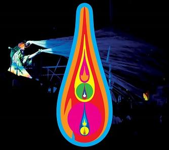
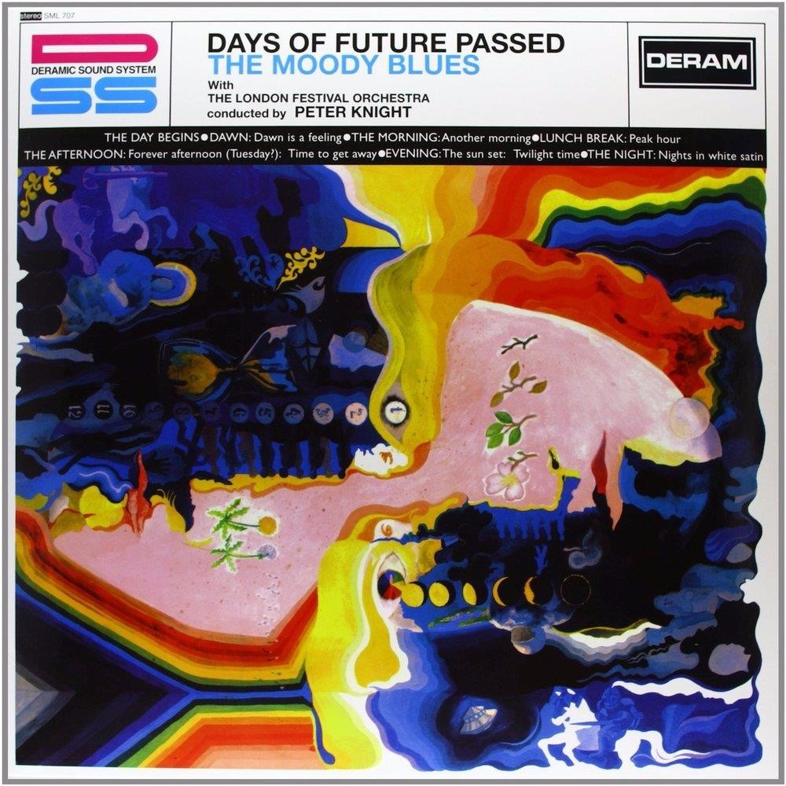
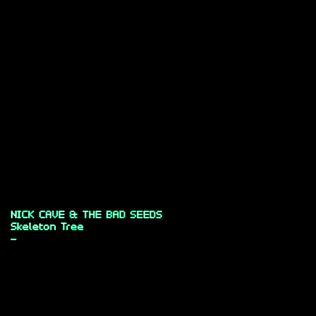
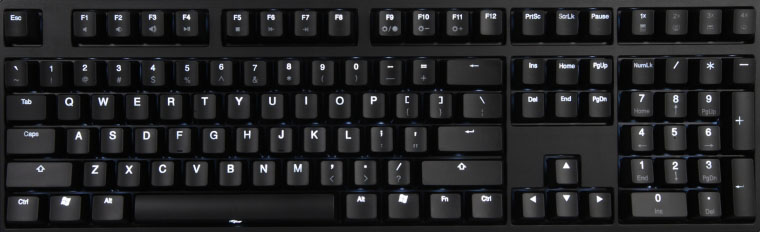